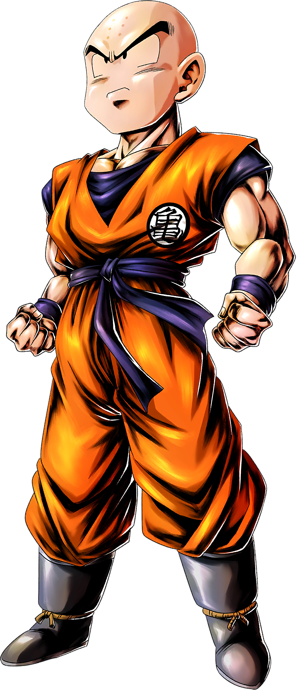
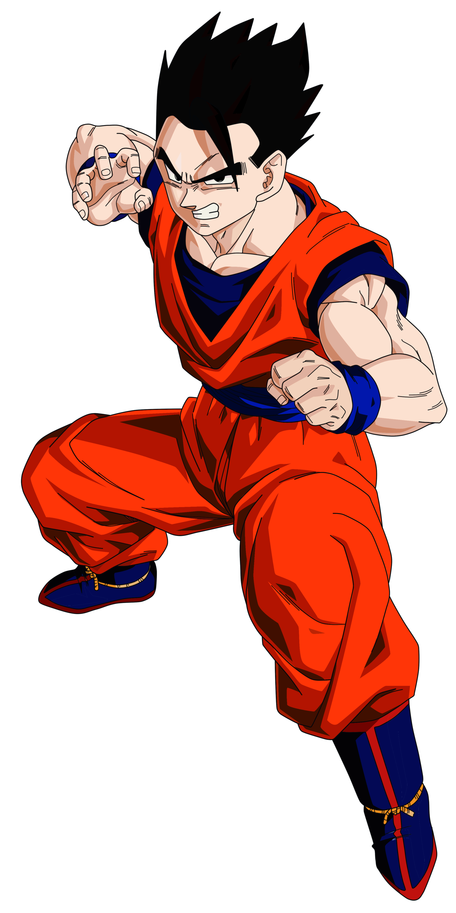
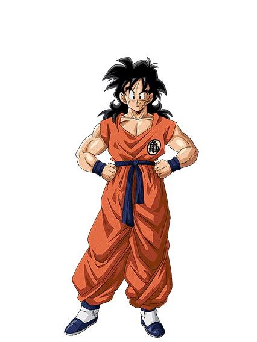

Los Guerreros Z
Goku
El protagonista de la historia, un Saiyajin criado en la Tierra que busca constantemente superar sus propios límites a través de las artes marciales y la protección de su hogar adoptivo.
Poderes y Habilidades
- Super Saiyajin (Fases 1, 2 y 3): Las transformaciones clásicas que multiplican su poder dorado.
- Super Saiyajin Dios / Blue: Los estados divinos que alcanzan el ki de los dioses.
- Ultra Instinto (Señal y Dominado): El estado técnico definitivo donde su cuerpo reacciona de forma autónoma.
- Kamehameha: Su técnica más icónica, un poderoso rayo de energía azul.
- Genki-dama: Una técnica que recolecta energía de todos los seres vivos para crear un ataque devastador.
- Teletransportación: La habilidad de moverse instantáneamente a cualquier lugar.

Vegeta
El orgulloso Príncipe de los Saiyajin. Al principio un enemigo despiadado, con el tiempo se convierte en el mayor rival y aliado de Goku, luchando por proteger a su familia.
Poderes y Habilidades
- Super Saiyajin / Super Vegeta: Logrado a través de la pura frustración y el entrenamiento duro.
- Majin Vegeta: Estado donde despierta su maldad interior gracias a la magia de Babidi.
- Super Saiyajin Blue Evolution / Ultra Ego: Sus máximos niveles de poder divinos basados en el orgullo y la destrucción.
- Garlik Ho: Su ráfaga de ki purpura más representativa, rival directa del Kamehameha.
- Final Flash (Resplandor Final): Uno de los ataques de energía acumulada más destructivos de la saga.

Piccolo
La reencarnación del Rey Demonio Piccolo Daimaku, quien comenzó como un villano obsesionado con matar a Goku, pero se convirtió en el sabio mentor de Gohan y un protector clave de la Tierra.
Poderes y Habilidades
- Fusión Namekiana (con Nail y Kami-sama): Uniones místicas que incrementaron drásticamente su poder básico.
- Piccolo Naranja (Orange Piccolo): Su transformación más poderosa, desbloqueada gracias a las Esferas del Dragón.
- Makankosappo: Un rayo de energía perforante cargado con dos dedos en la frente.
- Granada de Luz: Un ataque esférico masivo de ki concentrado en sus manos.

Krillin
El mejor amigo de Goku desde la infancia. A pesar de ser un humano común en un mundo de guerreros divinos, destaca por su valentía, ingenio táctico y técnicas icónicas como el Kienzan.
Poderes y Habilidades
- Poder Despertado (Gran Patriarca): Desbloqueo de su potencial oculto en Namekusei.
- Estado de No Ego (Selfless State): Control mental total sobre su miedo y su energía espiritual.
- Kienzan: Un disco de ki afilado capaz de cortar estructuras y enemigos mucho más fuertes que él.
- Taiyoken: Una ráfaga de luz cegadora utilizada de manera táctica para escapar o contraatacar.

Gohan
El hijo primogénito de Goku. Posee un potencial híbrido (humano-saiyajin) latente que supera al de los puros, aunque prefiere la vida pacífica del estudio a menos que sus seres queridos corran peligro.
Poderes y Habilidades
- Super Saiyajin 2: Desbloqueado en la batalla contra Cell debido a la furia extrema.
- Estado Definitivo (Gohan Místico): Potencial desbloqueado al máximo por el Anciano Kaioshin.
- Gohan Bestia (Gohan Beast): Su forma más reciente y destructiva, nacida de una furia sin precedentes.
- Masenko: Su técnica clásica de ráfaga de energía aprendida durante su duro entrenamiento con Piccolo.

Ten Shin Han
Un formidable artista marcial de la escuela Grulla que dejó atrás el camino del mal tras conocer al Maestro Roshi. Posee un tercer ojo y una disciplina inquebrantable.
Poderes y Habilidades
- Shishin no Ken: Técnica de alteración corporal que le permite dividirse en 4 cuerpos independientes.
- Kikoho / Shin Kikoho: Un cañón de energía cuadrado sumamente destructivo que consume su propia fuerza vital.
- Tercer Ojo: Le otorga una percepción visual sobrehumana y la capacidad de ver movimientos ultra veloces.

Yamcha
Un exbandido del desierto que se convirtió en uno de los primeros aliados de Goku. Aunque con el tiempo quedó rezagado en poder, sigue siendo un hábil atleta y peleador.
Poderes y Habilidades
- Roga Fufu Ken (Puño del Lobo): Una veloz ráfaga de golpes físicos que imita los ataques de un lobo salvaje.
- Sokidan: Una esfera de energía completamente controlable de manera remota con sus dedos.
